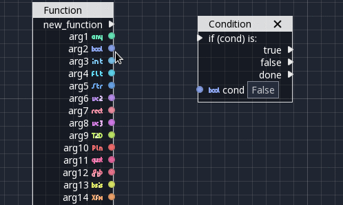

kapsloki
The default editor uses AngelScript as script, it would be nice to use or have an option to use C ++ as script as well.
A visualscript would be cool for newbies, too!

The default editor uses AngelScript as script, it would be nice to use or have an option to use C ++ as script as well.
A visualscript would be cool for newbies, too!

I’m sorry, what? C++ scripting? Don’t you think that’s a bit outside of the editor goals? And when I say outside I mean on the other side of the world.
The engine barelly survives as it is. And you want someone to maintain an irelevant c++ IDE(ish)?
Unless I misunderstood your request. In which case please be a little more specific.
may i ask why you’re “freaking out” about the question?
image 1:

gif 2:


Probably because the question sounds bizarre. C++ is not a scripting language. Granted it could in principle be scripted because the language specification doesn’t preclude it, but I’m not particularly aware of anyone providing such an implementation of C++. Maybe it’s out there, but I’m unaware of anyone making production use of such a thing, and it’s certainly not a widespread practice. Widespread practices are important when expecting things to work in the real world. Let alone the real world of $0 open source, which is a lot of what Urho is.
You should also be made aware that unlike C, C++ does not have any standard name mangling. So getting some compiled implementation of C++, to talk to a different interpreted implementation of C++, would be a non-trivial implementation effort.
So I totally understand why the previous replier would freak out. It’s like you’ve asked for something that you have no clue how much work, or how brittle or broken it’s likely to be. If you have proof of concept otherwise, by all means feel free to provide it. Pointing at some JavaScript editor for GDevelop doesn’t mean anything.
Now as Modanung makes reference to, you might be asking for a C++ compiler to ship with Urho3D, and for some kind of build system to come into existence at runtime, to compile C++ code on the fly, in some kind of nice neato nifty integrated way. Well I have to say… keeping multiple C++ compilers working in this manner, is a non-trivial amount of work. Also, some compilers you can’t just readily ship out with apps. The GPL stuff, yes you could. Clang, yep, although I haven’t kept up with how it does on Windows lately. Microsoft Visual C++, nope, forget it! And it’s a pretty important compiler for game development. So what are you going to do, get in the business of playing favorites with compiler support? Sounds like a really bad idea, and very much a complication of development concerns. Especially given the usual limited $0 resources.
I think it’s notable that the post Modanung references, is from 5 years ago. That should probably tell you something about the doability. Feel free to chase that person down about how far he got, or didn’t get. The last post in that thread is from 4 years ago.
The latest commit to the repository in question was made only two years ago.
Only for an AssetImporter issue, not anything related to runtime compiling of C++. It means the author was mildly paying attention 2 years ago. Chasing down the author, or going over that codebase for anything useful, is left as an exercise for the OP. It’s not going to be “great stuff waiting to happen”, not in any $0 open source universe I’ve ever experienced. It might provide proof of concept for a limited use case, like 1 compiler and 1 platform, and good luck if it has anything to do with an editor, like the OP wanted. If OP wants it, OP can figure out how the heck anyone would ever pull it off.
@bvanevery Maybe you should give it a try. 
It is definitely not within my personal priorities to get C++ scriptable or to integrate C++ compilers with shipping applications. To the extent I’ve cared or still care about such proximate issues, my efforts over the years have gone into inventing a programming language. Which is difficult enough, and I don’t have anything currently to show for the effort spent. I suspect the OP’s desire is a complete wild goose chase, and definitely think they can take the risk of trying to prove otherwise.
Since it’s to make a big, unnecessary and dramatic drama text, I’ll make one too.
After a week or so without logging in, I came back to see if there is anything new on Urho3D and I run in it.
I don’t need to prove anything to anyone, just as you don’t have to.
But I still think some people should know the difference between asking for something and forcing someone to do it.
Isn’t this just a feature request topic? Am I making you do it? If you think it’s crazy, why not just ignore it?
This request was to be just here, standing still. Waiting for as long as one day I or anyone else embraces the idea or ignore forever until we die.
I think the Urho3D community, remembering, just thinking, not generalizing of course, minority, has some problems with new users. This keeps users away.
As I’ve even seen, people helping and discussing new users, etc.
As an open source fan, should we become Linus Torvald?
For these and others I saw that I really made the right decision not to go here anymore and use FreeGLut September-2019 version, GLAD, GLM, etc and some ideas I read even here and learn how to do something from scratch, trash or not.
If you think it’s crazy, why not just ignore it?
To encourage people, who participate in Open Source communities, to understand the engineering ramifications of what they’re asking, and how they personally are going to contribute to the desired result. To discourage people, from making requests without a plan for how they’re going to help make it happen. The world is long on ideas, short on people who do the months and years of labor to implement those ideas.
Especially when the work is performed for $0, requests that don’t seem to show any sense, are annoying. And if a requestor actually thinks they are sensible, then they can do the work of educating others why it’s sensible and achievable. I think other, larger Open Source communities actually have formalized processes for such things. Not that Urho3D needs more formality, but if you think C++ “scripting” is a good idea, you can give examples of software where someone actually pulled this off.
Open Source is as good as your personal discipline to actually do things. Not just ask other people to do things. I’m not so “hardcore” as to expect you to provide code or shut up. That’s a sentiment you’ve surely run into, if you’ve spent any time in Open Source. “Where’s your patch / pull request?” But you can definitely provide some legwork and due diligence for something “big” you’d like to see, and not get bent out of shape when someone actually expects that out of you. Other people pay for Open Source with their labor, how are you paying for it? What’s your sweat equity into making things actually work?
In Open Source, if you want to be taken seriously, then be serious. You can only lead by example. That’s the only power you’ve got with volunteers.
You can call this “needless drama” if you like, and you can say you like this community better than that community, neener neener neener. But I’ve been at this a long time and AFAIAC, this is the cost of doing business. Only the serious people actually get anything done, the rest is all talk.
" Not that Urho3D needs more formality, but if you think C++ “scripting” is a good idea, you can give examples of software where someone actually pulled this off."
Community driven “0$”
See you around. Bye.
This does not appear to be C++ used as a scripting language. This appears to be a C++ binding to Godot’s API. What is leading you to believe that C++ is being used as an interpreted language? Or a runtime compiled language?
As for Godot being a “$0 community”, they aren’t:
There’s no business model behind Godot, it’s free and open source forever, simply because that’s what we want to make. There is no company behind the project, only individuals with a common vision (and a US charity handling our legal and fiscal matters).
As others mentioned, we do have a crowdfunding campaign on Patreon (+ some direct donations via PayPal) which bring us enough funds to hire 2.5 of our contributors full time to speed up the project development (I’m one of those since a few months).
They are low budget, but they do have one, and they’re relying on crowdfunding to make various things possible. The differences between what they can do, and what Urho3D can do, is left as an exercise to the reader.